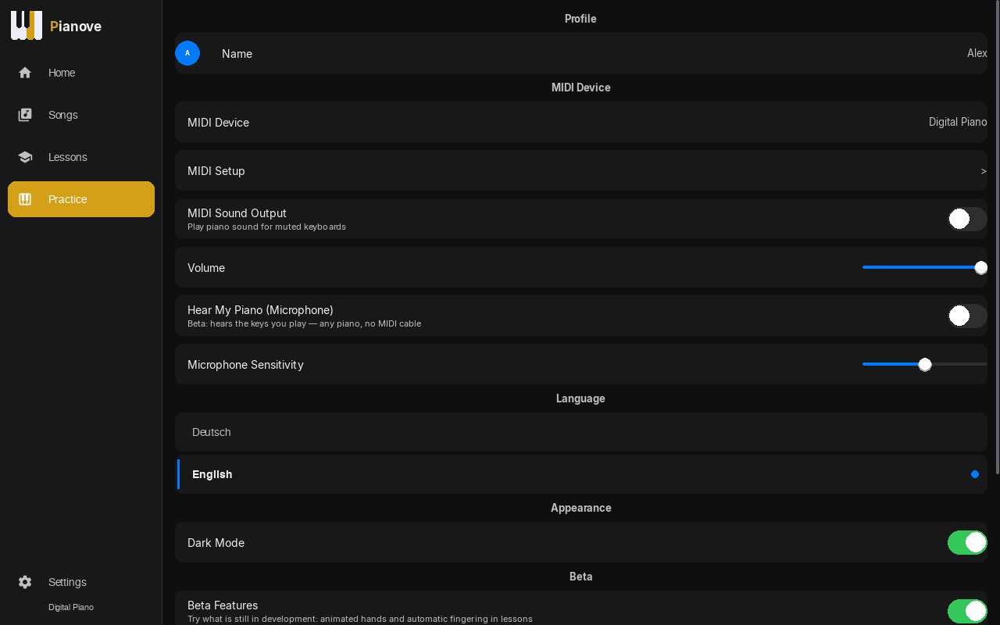

Your App
Settings
Everything that can be changed, section by section.
Overview

| Section | Setting | What it does |
|---|---|---|
| Profile | Name | How Pianove greets you |
| MIDI Device | MIDI Device | The connected keyboard |
| MIDI Setup | The keyboard view and range calibration (more) | |
| MIDI Sound Output | Piano sound for silent keyboards (more) | |
| Volume | Level of the piano sound | |
| Hear My Piano · Sensitivity | Play an acoustic piano through the microphone (more) | |
| Language | English · Deutsch | The app and all built-in lessons |
| Appearance | Dark Mode | Dark or light colours |
| Beta | Beta Features | Animated hands, automatic fingering, Listen (more) |
| Hands | Skin tone of the hands | |
| Content Creator | Creator Mode | Adds the Create tab with the lesson and course editors (more) |
| Reset Onboarding | Runs the first-start setup again; your progress stays |
Language
Pianove speaks English and German. The choice applies at once to the whole app, including lesson texts. To add a language, see pianove/locales/; each lesson then gets one more <lang>.json.
Saved automatically
Every change is saved the moment you make it, in ~/.pianove/storage.json.